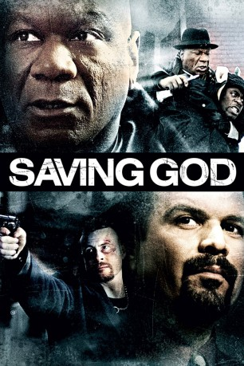

#9506 Saving God - Stand Up and Fight
Alternativ: Saving God
 
 IMDB-Wertung: 5.8 / 10
IMDB-Wertung: 5.8 / 10  Metascore: 0
Metascore: 0 
Nach 15 Jahren Haft wegen Totschlags kommt Armstrong Cane in sein altes Viertel zurück und nimmt den Kampf gegen Drogen und Gewalt auf. Als er bei einer Auseinandersetzung zwischen den verfeindeten Drogengangs Norris, einem kleinen Dealer, das Leben rettet gewinnt er dessen Vertauen und kann ihn überzeugen, aus dem Drogenhandel auszusteigen. Als Drogenboss Blaze davon erfährt, droht er Norris umzubringen und plötzlich befindet sich Cane in einem Zwiespalt. Einerseits will er Norris schützen und andererseits erkennt er die Gefahr selbst wieder in den Strudel von Gewalt und Rache zu geraten.
Jahr: 2008
Dauer: 102 Minuten
FSK: 16
Land: Kanada Studio: Koch MediaTonspuren: DTS - ,
Untertitel:
Auflösung: 1080p (1920x1080) Größe: 11878 MB
Genre: Drama, Krimi
Regisseur: Duane Crichton
Drehbuch: Michael Jackson
Soundtrack: Eric Cadesky, Nick Dyer
Darsteller:
 Ving Rhames als Armstrong Cane
Ving Rhames als Armstrong Cane- Dean McDermott als John Henry James / Blaze
 Ricardo Chavira als Rev. Danny Christopher
Ricardo Chavira als Rev. Danny Christopher- Dwain Murphy als Norris Johns
 Genelle Williams als Ashley Ellis
Genelle Williams als Ashley Ellis- Kate Todd als Sherri Butler
- K.C. Collins als Mike
- Richard Leacock als Mr. Ken Salter
 Phillip Jarrett als Pastor Curry
Phillip Jarrett als Pastor Curry- Egidio Tari als Detective Lombardi
- Kedar Brown als Deacon Jake
 Joanne Boland als Nadine
Joanne Boland als Nadine- Sharon McFarlane als Mrs. Stewart
 Boyd Banks als Poole
Boyd Banks als Poole Johnie Chase als Desk Sargeant
Johnie Chase als Desk Sargeant Karl Campbell als Police Officer #1
Karl Campbell als Police Officer #1- Jason Weinberg als Narc #2
- Marnie Robinson als Marcia Clarke
- Balford Gordon als Wylie
 Ted Ludzik als Watchman #1
Ted Ludzik als Watchman #1- Marcel Jones als Orderly in Hospital
- Sean Mauricette als Car jacker
 Kim Roberts als Dr. Munson
Kim Roberts als Dr. Munson- Jully Black als Aunt Essie
- Tosh Robertson als Marcus Ellis
- Kathy Maloney als Ms. Ellis
- Ardon Bess als Officer Earle
- Barbara Barnes-Hopkins als Mavis Johns
- David Carty als Buggs
- Kathryn Haggis als Ms. Linda
- Christopher Marren als Police Officer #2
- Tony Meyler als Police Officer #3
- Daveed Louza als Narc #1
- Joanne Alderson als Car-Jacker Female (Precious)
 Joe Bostick als Mailman
Joe Bostick als Mailman
Datei: X:\2008(N-Z)\Saving God - Stand Up and Fight (2008, FSK16, 1920x1080).mkv seit 05.09.2018
Festplatte: HD 2008(G-Z)-2009(A-F)
 Es gibt insgesamt 91 Filme in der Gruppe '2008(N-Z)'
Es gibt insgesamt 91 Filme in der Gruppe '2008(N-Z)'